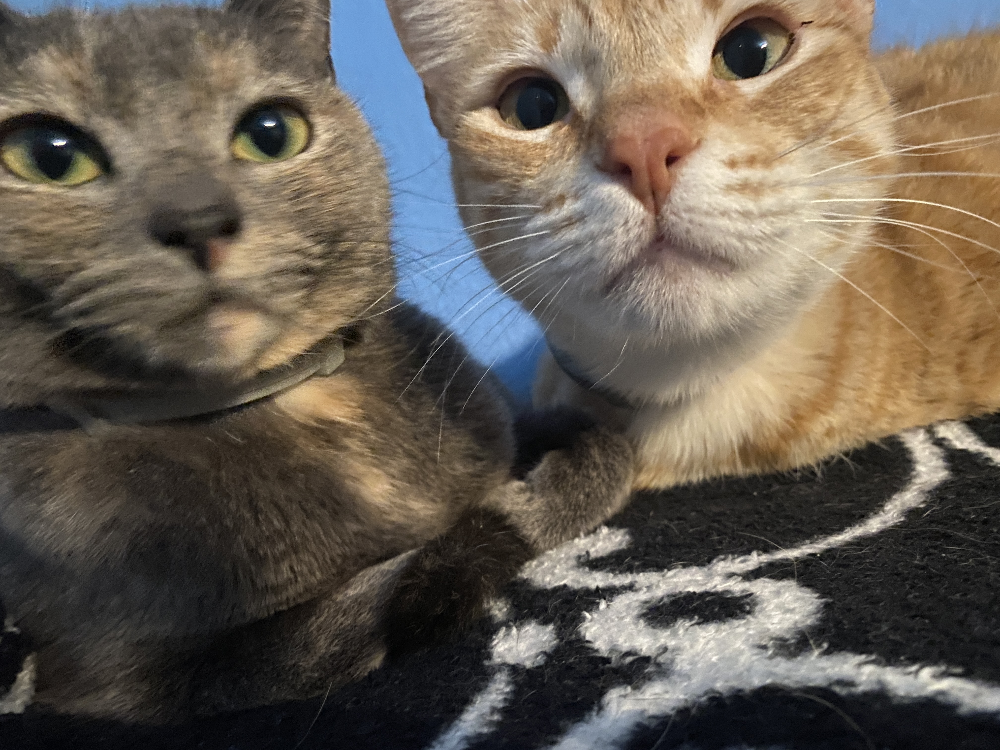

Yadira's Homepage
“Of all the things God created, from sunrises to rainbows, to black holes and humor, cats are the most fascinating to me.” – Jarod Kintz

Hello!
I'm Yadira and I'm from LA. Some of my interests consist of digital art, reading and taking care of the cats around my neighborhood. I'm a huge cat person and could talk about them all day if I could. Enjoy these pictures of my cats!